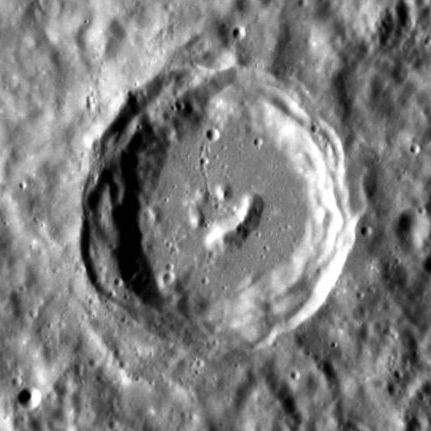

Mercurius




Mercurius is de planeet die het dichts bij de zon ligt. Ook is dit de kleinste planeet in ons zonnestelsel. Je kan de planeet ook zien vanaf aarde. Dan moet je of kort na zonsondergang kijken als het een avondster is of voor zonsopgang als het een ochtendster is. De Mariner-10 heeft de planeet uitgebruid onderzocht en het dichts bij dat die bij de zon is geweest is 700 kilometer afstand van Mercurius.
karakteristieken
oppervlak